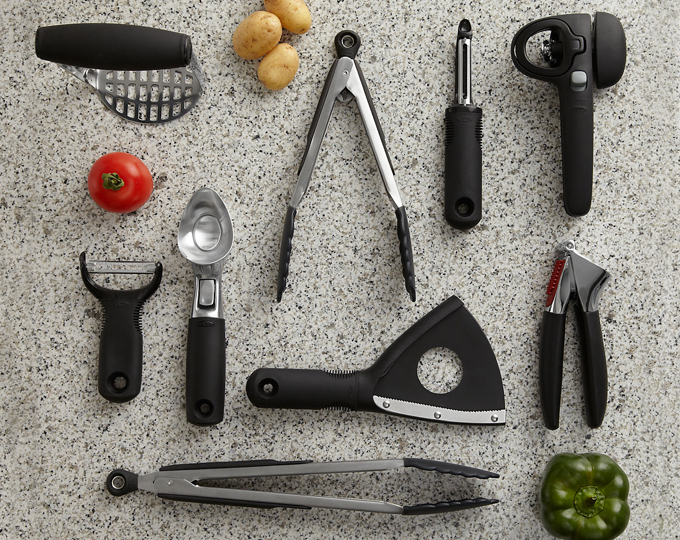

홈 > 브랜드 매거진 > 옥소
옥소
옥소는 평범한 주방 도구를 사용자의 몸과 습관에 맞춘 디자인 문제로 바라본다. 제품의 차별성은 장식보다 손에 잡히는 감각, 사용 편의, 반복되는 동작을 세심하게 개선하는 태도에 있다.
산업 분야 홈·라이프스타일 · 공개 등급 편집 검수 · 브랜드 평가 4.7 ★

한눈에 보는 브랜드
옥소는 평범한 주방 도구를 사용자의 몸과 습관에 맞춘 디자인 문제로 바라본다. 제품의 차별성은 장식보다 손에 잡히는 감각, 사용 편의, 반복되는 동작을 세심하게 개선하는 태도에 있다.
브랜드 관점
옥소는 평범한 주방 도구를 사용자의 몸과 습관에 맞춘 디자인 문제로 바라본다. 제품의 차별성은 장식보다 손에 잡히는 감각, 사용 편의, 반복되는 동작을 세심하게 개선하는 태도에 있다.
시작과 성장
미국의 주방용품 브랜드인 옥소(OXO)는 샘 파버(Sam Farber)가 관절염으로 고생하는 아내를 위해 사용이 편리하면서 안전한 조리도구를 만들면서 시작되었다. 현재 옥소는 수십 년의 연구개발을 통해 주방용품의 편의성을 높이고 기능에 새로운 표준을 제시한 '유니버셜 디자인'의 선두주자로 인정받고 있다.
브랜드 아이덴티티
옥소는 인종, 나이, 장애의 유무에 관계없이 모든 사람이 편하고 안전하게 이용할 수 있는 '유니버셜 디자인'의 제품을 만들고자 한다. 면밀한 소비자 조사와 편리함을 찾기 위한 지속적인 연구를 통해 제품에 진정한 '굿 그립'을 부여하고 있다.
미국의 주방용품 브랜드인 옥소(OXO)는 샘 파버(Sam Farber)가 관절염으로 고생하는 아내를 위해 사용이 편리하면서 안전한 조리도구를 만들면서 시작되었다. 현재 옥소는 수십 년의 연구개발을 통해 주방용품의 편의성을 높이고 기능에 새로운 표준을 제시한 '유니버셜 디자인'의 선두주자로 인정받고 있다.
제품과 서비스
옥소의 제품과 서비스는 홈·라이프스타일 범주에서 해석됩니다.
현재 상태
타임라인
BI/CI 변천사
함께 읽을 브랜드
 홈·라이프스타일 · 편집 검수알레시
홈·라이프스타일 · 편집 검수알레시알레시(Alessi)는 1921년 조반니 알레시가 이탈리아 오메냐에서 설립한 주방·생활용품 디자인 브랜드다. 금속 가공 공방에서 출발해 세계적 건축가·산업디자이너와...
OL
오롤리데이
홈·라이프스타일 · 자료 기반오롤리데이오롤리데이는 행복을 핵심 콘셉트로 내세운 한국 디자인·라이프스타일 브랜드다. 삶을 더 행복하게 만드는 다정한 제품을 만든다는 정체성을 내걸고 문구와 잡화를 중심으로...
70
70 Hudson Yards
홈·라이프스타일 · 편집 검수70 Hudson Yards70 Hudson Yards는 2025년에 기록된 Property 계열의 브랜드 아이덴티티 사례입니다. DNCO가 아이덴티티 작업의 디자이너로 기록되어 있습니다. 공...
Th
The East Cut
홈·라이프스타일 · 편집 검수The East Cut더 이스트 컷(The East Cut)은 디자인 스튜디오 콜린스(Collins)가 2018년 미국 샌프란시스코 다운타운의 한 동네에 부여한 플레이스 브랜딩 사례다....
Fl
Florentia Village
홈·라이프스타일 · 편집 검수Florentia Village플로렌티아 빌리지는 북런던 해링게이 웨어하우스 지구에 있는 메이커 중심 산업 캠퍼스다. 1970년대 의류 제조 거점으로 출발해 2021년 제너럴 프로젝츠가 부지를 인...
 홈·라이프스타일 · 편집 검수Here East
홈·라이프스타일 · 편집 검수Here EastHere East는 2014년에 기록된 Placemaking 계열의 브랜드 아이덴티티 사례입니다. DNCO가 아이덴티티 작업의 디자이너로 기록되어 있습니다. 타입,...
We
West Loop
홈·라이프스타일 · 편집 검수West LoopWest Loop는 2024년에 기록된 Placemaking 계열의 브랜드 아이덴티티 사례입니다. Landor가 아이덴티티 작업의 디자이너로 기록되어 있습니다. 공개...
We
Westbund Central
홈·라이프스타일 · 편집 검수Westbund CentralWestbund Central는 2026년에 기록된 Placemaking 계열의 브랜드 아이덴티티 사례입니다. DNCO가 아이덴티티 작업의 디자이너로 기록되어 있습니...